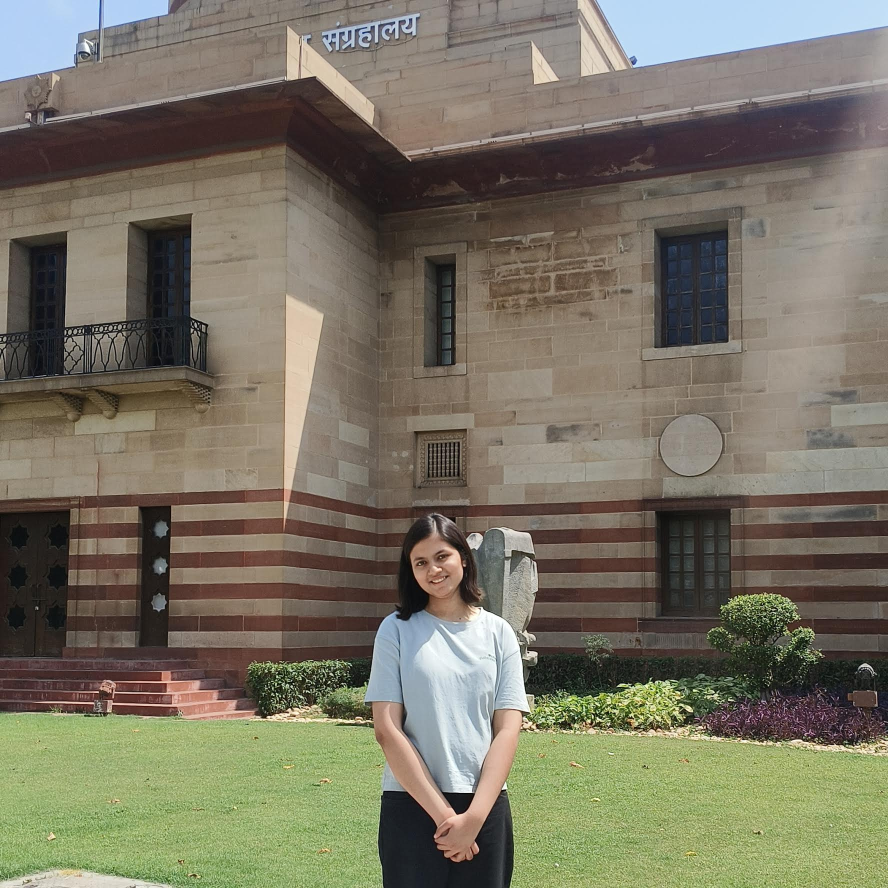

BTW, here's just a random pic of Batman (i just wanted to add it AAAAAAAA)

Image credit: Wallpapers4Screen
I'm a student who enjoys exploring technology, entrepreneurship, design, writing, and creative problem solving. I like turning interesting ideas into projects and learning something new through every project I work on.
Explore My Work
This website is a small collection of the things I enjoy, the projects I have worked on, and some of the interests that make me who I am. P.S. I made it for Sunrise! My main portofolio is still a work in progress, but I hope to have it up soon :)
I enjoy exploring the intersection of technology, business, creativity, and social impact (ik that's a lot!). Whether I am building a digital platform, exploring sustainability, designing something visual, or writing about an idea, I enjoy learning through the process and turning what I learn into something I can actually create.
I enjoy web development, experimenting with AI (I'm still learning ML!), exploring product ideas, and learning how technology can be used to create engaging digital experiences.
I enjoy graphic design, branding, visual storytelling, and creative content, especially when they help make an idea easier and more interesting to understand. I'm also learning about UX/UI design (ik the basics!)
I enjoy developing startup ideas, exploring business strategy, understanding real-world problems, and thinking about how creative solutions can become useful products or initiatives.
There are also a few things outside of my projects and work that I really enjoy, so I thought they deserved a place on the website.
Pizza - Pizza Hut
Pasta - Macaroni (without any veggies tho, weird ik)
Noodles - Espcially Top Ramen and Yippee's Atta Noodles
Burger - Burger King
Chocolate - KitKat, Dairy Milk Silk Oreo
I love both Marvel and DC, and Batman and Spider-Man are definitely among my favourite superheroes. I also really enjoyed Brand New Day, and Aunt May's monologue particularly stood out to me.
Image credit: Wallpapers4Screen